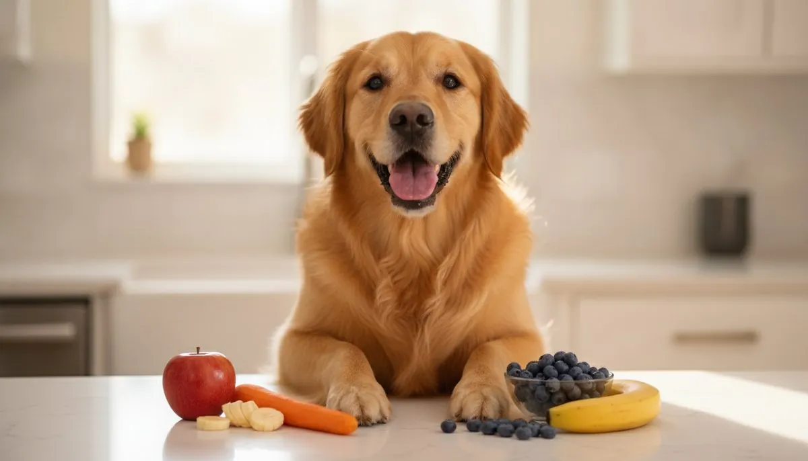

Safe Fruits & Veggies Dogs Can Eat

Good news — plenty of fruits and vegetables make healthy, low-calorie treats for dogs, and several are favorites with vets for everything from weight loss to settling an upset stomach. Here are 15 safe picks, what each one is actually good for, how much to give, and how to serve it right.
🍎 Fruits
Apple Fiber + Vitamin C
A crunchy, hydrating treat that's about 85% water. Remove the core and seeds (the seeds have trace cyanide).
Serve: a few slices, chilled for summer.
Safe amount + tips →Banana Potassium
Soft, cheap and easy to share — but high in natural sugar, so it's a treat, not a daily staple.
Serve: a couple of small slices; mash on a lick mat or freeze.
Safe amount + tips →Blueberries Antioxidants · Low-cal
A near-perfect treat — tiny, low in sugar and packed with antioxidants. They double as easy training rewards.
Serve: a small handful, fresh or frozen.
Safe amount + tips →Strawberries Vitamin C
Sweet and full of fiber and vitamin C — just sugary, so keep portions small.
Serve: 1–2 sliced berries, tops removed.
Safe amount + tips →Watermelon Hydrating
About 92% water — the ultimate hot-day treat. Remove the seeds and the hard rind.
Serve: seedless chunks, fresh or frozen.
Safe amount + tips →Mango Vitamins A & C
Sweet and vitamin-rich. Peel it and always remove the pit (a choking and blockage hazard).
Serve: a few small peeled pieces, occasionally.
Safe amount + tips →Pineapple Vitamin C
A tropical, juicy treat — fresh only (skip the skin and core, and avoid canned/syrup).
Serve: a few small fresh chunks.
Safe amount + tips →🥦 Vegetables
Carrot Low-cal · Good for teeth
One of the best everyday treats — satisfying to chew and great for weight management. Raw or cooked.
Serve: bite-size pieces; a frozen one soothes teething pups.
Safe amount + tips →Green beans Low-cal · Fiber
A vet favorite for weight loss — filling, low in calories, and dogs love them. Plain only.
Serve: fresh or steamed, no salt or butter.
Safe amount + tips →Pumpkin Gentle on tummies
Plain cooked pumpkin is fiber-rich and famously good for mild digestive upsets. Use pure pumpkin — never pie filling.
Serve: a spoonful of plain canned/cooked pumpkin.
Safe amount + tips →Sweet potato Fiber · Vitamins
A nutritious, naturally sweet treat when cooked plain (never raw, never seasoned).
Serve: small cooked, unseasoned pieces.
Safe amount + tips →Cucumber Hydrating · Low-cal
Crunchy, refreshing and almost calorie-free — perfect for overweight dogs.
Serve: thin slices or sticks.
Safe amount + tips →Peas Protein · Vitamins
Little nutrition bombs — fresh or frozen are great; skip canned (too much salt).
Serve: a spoonful, plain.
Safe amount + tips →Celery Low-cal · Fresh breath
Crunchy and hydrating, with a bonus: it can help freshen doggy breath.
Serve: bite-size pieces.
Safe amount + tips →Broccoli In moderation
Fine in small amounts (fiber + vitamin C), but the florets contain a compound that can irritate the gut in large quantities — so keep it to a little.
Serve: a few small plain pieces.
Safe amount + tips →Frequently asked questions
Can dogs eat fruit and veggies every day?
In small amounts, yes — but treats (including produce) should stay around 10% of daily calories. The rest should be complete, balanced dog food.
Raw or cooked — which is better?
Both work. Some (sweet potato, pumpkin) should be cooked plain; others (carrot, cucumber) are great raw. Always skip salt, butter, oil and seasoning.
Do I need to remove seeds and pits?
Yes — remove apple cores/seeds, mango/cherry pits and watermelon seeds. They're choking or toxicity risks.
How do I work out the right treat amount?
Use our calorie calculator for your dog's daily target, then keep treats under 10% of it.
🧊 Get the free Pet Food Fridge Guide
A printable checklist of 50+ foods your dog & cat can and can't eat — plus seasonal pet-safety tips. No spam, unsubscribe anytime.